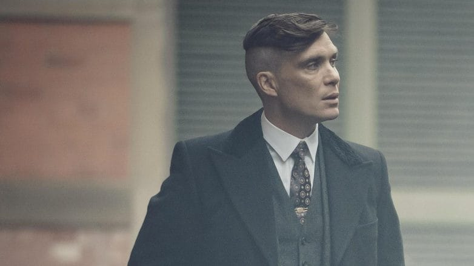
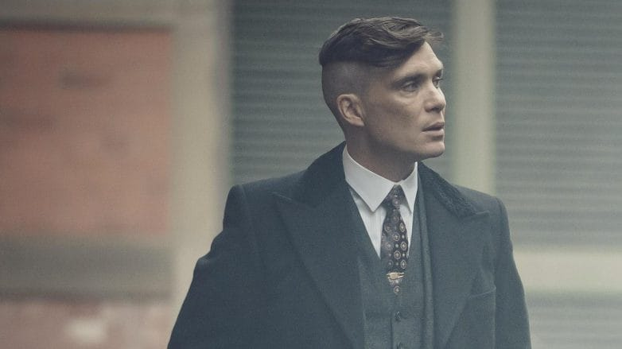

Os Peaky Blinders são uma organização criminosa de origem cigana que se passa na cidade de Birmingham, Inglaterra, em 1919, formada vários meses após o final da Primeira Guerra Mundial
(1914–1918).Em que o lider é Thommy Shelby.
Shelby é um veterano da Primeira Guerra Mundial e sofre de transtorno de estresse pós-traumático como resultado de suas experiências durante a guerra.
Thommy e uma pessoa da qual não importa a situação ele é Frio, suas ações são friamente calculadas e é ûnico com esses pensamentos.